2 TAKSONOMI FILOGENETIK
2.1 Klasifikasi Molekular Filogenetik Berdasarkan Gen 16S rRNA
2.1.1 Pengantar
Klasifikasi molekular filogenetik merupakan klasifikasi yang disusun dengan mempertimbangkan jalur evolusi setiap organisme yang dikaji. Hal ini berbeda dengan klasifikasi fenetik yang hanya melihat hubungan antar organisme berdasarkan karakter yang ada pada saat ini (Priest & Austin, 1993). Dalam prosesnya, klasifikasi molekular filogenetik menggunakan data berupa urutan (sequence) nukleotida pada DNA atau asam amino pada protein. Sequence nukleotida yang digunakan dalam klasifikasi molekular filogenetik harus merupakan sequence yang diwariskan langsung oleh nenek moyang (homolog) serta memiliki kesamaan sejarah evolusi. Sebuah sequence dapat disebut sebagai marker molekular apabila memenuhi persyaratan berupa: (1) terdistribusi pada seluruh organisme, (2) memiliki kesetaraan fungsi pada seluruh organisme, dan (3) memegang peranan vital bagi kehidupan organisme. Hal ini menjadikan marker molekular merupakan sequence yang tepat untuk digunakan dalam studi klasifikasi filogenetik.
Gen 16S rRNA merupakan salah satu contoh marker molekular karena terdapat pada organisme baik yang berada pada domain Bacteria, Archaea, serta Eukarya. Saat ini, informasi mengenai sequence gen 16S rRNA sudah sangat banyak tersedia pada database internasional dan juga sudah dijadikan standar penetapan suatu spesies baru dalam studi taksonomi. Pada praktikum ini kita akan mencoba mengklasifikasikan sejumlah bakteri dengan cara merekonstruksi pohon filogenetik berdasarkan sequence gen 16S RNA yang dimiliki.
2.1.2 Cara Kerja
2.1.2.1 Persiapan Data
Data yang digunakan dalam klasifikasi berbasis molekular filogenetik adalah berupa urutan (sequence) nukleotida atau asam amino. Kedua jenis sequence ini umumnya dapat diperoleh dari hasil sequencing DNA/protein maupun dari sequence database internasional yang tersedia di internet. Untuk kemudahan dalam praktikum ini, kita akan menggunakan cara kedua, yakni mengunduh sequence nukleotida/asam amino dari internet. Saat ini sudah banyak sekali situs yang memfasilitasi hal tersebut. Situs GenBank, DDBJ, serta EMBL merupakan situs dimana pencarian sequence nukleotida/asam amino umumnya dilakukan. Dalam acara praktikum ini, kita akan mencoba mengunduh data melalui GenBank (http://www.ncbi.nlm.nih.gov/Genbank/) dan untuk selanjutnya sequence DNA akan digunakan sebagai contoh persiapan data.
Pada GenBank kita dapat mencari sequence DNA berdasarkan nama gen, spesies pemilik gen, atau accession number pada kolom search yang tersedia. Accession number merupakan penanda/identitas dari setiap sequence DNA yang telah disimpan pada situs tersebut. Pada umumnya accession number tertulis pada artikel publikasi ilmiah yang penelitinya telah menyumbangkan hasil sequencing-nya ke database yang ada. Pencarian pada menu search di GenBank terdiri dari banyak menu sub-pencarian untuk memudahkan penelusuran data, namun dalam praktikum ini kita akan lebih fokus pada pencarian dengan menu Nucleotide, Protein, dan Genome. Sebagai contoh, apabila kita ingin melakukan pencarian gen 16S rRNA bakteri Escherichia coli maka kita dapat melakukan salah satu dari hal berikut: 1. Melakukan penelusuran pustaka, misalnya pada artikel jurnal untuk mendapatkan accession number. Sebagai contoh, Escherichia coli ATCC 11775T pada Bergey’s Manual of Systematic Bacteriology (Brenner et al., 2005) memiliki accession number X80725. Accession Number ini dapat diketikan pada kolom search nucleotide. Cara ini merupakan pencarian yang cukup spesifik karena setiap sequence dari setiap jenis organisme memiliki accession number tersendiri. 2. Melakukan penelusuran pada situs List of Prokaryotic names with Standing in Nomenclature (LPSN, http://www.bacterio.cict.fr/). Penelusuran melalui situs ini khusus untuk pencarian sequence bakteri dan archaea saja. Informasi yang diberikan mengenai suatu genus/spesies meliputi type species, type strain, tahun ditemukan, dan publikasi (valid/efektif) terkait genus/spesies tersebut. 3. Melakukan penelusuran pada kolom search nucleotide di GenBank dengan mengetik kata kunci, seperti “Escherichia coli 16S rRNA”. Cara ini kurang spesifik karena akan menghasilkan sejumlah daftar yang berisikan berbagai macam spesies bakteri yang mengandung sequence gen 16S rRNA dan kita harus mencarinya satu per satu. 4. Melakukan penelusuran pada kolom search genome di GenBank dan kemudian mengetik nama spesies yang kita inginkan. Umumnya hasil penelusuran meliputi sejumlah daftar complete genome dari spesies yang dicari. Kita dapat mencari gen yang diinginkan dalam daftar complete genome tersebut. Cara ini cukup memakan waktu, namun kita dapat menelusuri berbagai jenis gen dari spesies tersebut.
Pada genbank, halaman tersebut akan mengandung informasi mengenai jenis sequence, asal sequence, produk yang dihasilkan, dan sequence itu sendiri. Dalam contoh ini jenis sequence adalah gen 16S rRNA yang berasal dari Escherichia coli ATCC 11775T. Gen ini akan menghasilkan produk berupa RNA ribosomal (rRNA). Informasi mengenai hasil pengkodean dari sequence dapat dilihat pada FEATURES. Sequence dari DNA itu sendiri yang dituliskan per 10 nukleotida pada kolom ORIGIN. Sequence ini selanjutnya dapat diunduh dalam bentuk FASTA dengan cara meng-klik link FASTA pada baris ketiga, dan akan muncul:
E.coli (ATCC 11775T) gene for 16S rRNA GenBank: X80725.1 GenBank Graphics ’>gi|1240022|emb|X80725.1| E.coli (ATCC 11775T) gene for 16S rRNA AGTTTGATCATGGCTCAGATTGAACGCTGGCGGCAGGCCTAACACATGCAAGTCGAACGG TAACAGGAAGCAGCTTGCTGCTTTGCTGACGAGTGGCGGACGGGTGAGTAATGTCTGGGA AACTGCCTGATGGAGGGGGATAACTACTGGAAACGGTAGCTAATACCGCATAACGTCGCA AGCACAAAGAGGGGGACCTTAGGGCCTCTTGCCATCGGATGTGCCCAGATGGGATTA…
Kedua jenis data ini (informasi sequence dan sequence FASTA) dikompilasi ke masing-masing arsip untuk membuat database sendiri.
- Sequence Alignment dengan Program ClustalX 2.1 (Larkin et al., 2001) Alignment bertujuan untuk menata sequence agar satu sama lain diletakkan sesuai dengan posisi homologi antar sequence. Hanya berdasarkan alignment inilah kita dapat membandingkan antar sequence gen 16S rRNA dari masing-masing strain mikrobia yang akan diklasifikasikan. Alignment menggunakan program ClustalX dilakukan dengan mempersiapkan data sequence dalam format FASTA. Dataset sejumlah sequence yang telah didapatkan dikumpulkan terlebih dahulu ke dalam 1 file Notepad dengan awalan dari setiap sequence diberikan tanda “>”. Contohnya dapat dilihat pada sequence berikut:
’>Allochromatium vinosum DSM 180 agagtttgatcctggctcagattgaacgctggcggcatgcctaacacatgcaa…
’>Chlorobium luteolum DSM 273 aggaaagcggcttcggccgggagtacttggcgcaagggtgagtaaggcatagg…
’>Chloroflexus aurantiacus J-10-fl aaaggaggtgatccagccgcaccttccggtacggctaccttgttacgacttcg…
Penamaan dalam pembuatan dataset sequence ini juga perlu diperhatikan. Disarankan untuk menyingkat nama dari setiap sequence yang ada karena program ClustalX akan secara otomatis memotong karakter nama apabila melebihi 30 karakter. Selain itu, hasil alignment ClustalX yang akan digunakan dalam program Phylip (.phy) juga akan secara otomatis memotong karakter nama apabila melebihi 10 karakter. Hal ini akan membingungkan apabila pembeda antar nama sequence satu dengan lainnya terletak pada posisi karakter >10, karena ketika dipotong akan menghasilkan nama yang sama antar sequence satu dengan lainnya. Dengan demikian, sebaiknya kita membuat daftar baru (dengan MS Word atau Notepad) yang berisi rincian nama sequence beserta singkatannya. Singkatan nama ini yang akan kita gunakan dalam dataset yang akan diproses dalam ClustalX. Contoh dataset diatas setelah namanya disingkat akan menjadi: ’>AvinDSM180 agagtttgatcctggctcagattgaacgctggcggcatgcctaacacatgcaa…
’>ClutDSM273 aggaaagcggcttcggccgggagtacttggcgcaagggtgagtaaggcatagg…
’>ChaurJ-10-fl aaaggaggtgatccagccgcaccttccggtacggctaccttgttacgacttcg…
Perlu diperhatikan bahwa pemberian nama tidak boleh mengandung spasi. Penyingkatan nama sequence hingga satu karakter (A-Z) sebaiknya tidak dilakukan karena akan membuat program ClustalX salah mengenali karakter nama menjadi salah satu komponen sequence nukleotida atau asam amino.
Jadi, contoh seperti: ’>A caaaatggagagtttgatcctggctcaggatgaacgctggcggcgtgcttaac…
tidak boleh dilakukan karena nama “A” akan disalahartikan sebagai nukleotida oleh ClustalX. Dataset yang telah siap selanjutnya disimpan dan selanjutnya dimasukan ke dalam ClustalX. Pertama buka program ClustalX, File → Load Sequences. Pilih file dataset yang telah disimpan dan program tersebut akan secara otomatis menampilkan nama sequence pada kolom sebelah kiri dan sequence-nya di kolom sebelah kanan.
Sebelum melakukan alignment, kita harus terlebih dahulu mengatur file output yang akan dihasilkan. Program ClustalX dapat menghasilkan beberapa macam format file dari satu jenis dataset, yakni: CLUSTAL, GCG/MSF, GDE, NBRF/PIR, NEXUS dan PHYLIP. Masing-masing file output ini mempunyai kegunaan masing-masing karena diperlukan oleh program-program analisis lainnya. Dalam praktikum ini kita hanya akan menggunakan format CLUSTAL (.aln), GDE (.gde), dan PHYLIP (.phy). Pada program ClustalX, pilih Alignment → Output Format Options → klik GDE FORMAT, dan PHYLIP FORMAT → CLOSE. Setelah itu pilih Alignment → Do Complete Alignment.
2.1.2.2 Rekonstruksi Pohon Filogenetik dengan PHYLIP v3.6.9 (Felsenstein, 2005)
Rekonstruksi dengan program ini membutuhkan file input dalam format .phy yang dapat dihasilkan oleh program ClustalX atau MEGA. Program Phylip memiliki serangkaian aplikasi executeable yang dapat menganalisis data sequence dengan berbagai algoritme. Aplikasi yang terdapat pada Phylip antara lain:
clique dnamlk drawgram neighbor restml
concense dnamove drawtree pars retree
contml dnapars factor penny seqboot
contrast dnapenny fitch proml treedist
dnacomp dollop gendist promlk
dnadist dolmove main protdist
dnainvar dolpenny mix protpars
dnaml draw move restdist
Rekonstruksi pohon filogenetik pada Phylip dapat dilakukan dengan aplikasi neighbor, fitch, dnapars, dan dnaml untuk sequence nukleotida. Aplikasi neighbor juga dapat digunakan untuk merekonstruksi pohon dengan sequence asam amino, namun sebelumnya harus menggunakan input data yang dihasilkan dari aplikasi protdist. Aplikasi protml dan protpars memiliki prinsip analisis yang sama dengan dnaml dan dnapars, namun menggunakan sequence asam amino sebagai data inputnya. Copy file format .phy ke dalam folder exe yang terdapat di dalam folder Phylip dan kemudian ganti nama file tersebut menjadi infile tanpa menggunakan extension/format apapun. Folder exe terkadang sudah mengandung file dengan nama infile yang disebabkan oleh analisis data yang pernah dilakukan sebelumnya. Apabila kita menjumpai file infile tersebut, hapus terlebih dahulu dan kemudian baru mengganti nama file .phy menjadi infile. Selanjutnya, buka salah satu dari aplikasi yang tersedia dalam folder exe untuk menganalisis infile, dalam hal ini kita akan menggunakan aplikasi neighbor, yakni rekonstruksi dengan algoritme Neighbor- Joining. Perlu diketahui bahwa rekonstruksi pohon filogenetik yang menggunakan data distance matrix berbasis clustering seperti UPGMA, Neighbor-Joining, dan algoritme Fitch-Margoliash menggunakan data berupa matriks p-distance yang dihasilkan oleh aplikasi dnadist untuk sequence DNA atau protdist untuk sequence asam amino.
Dengan demikian, infile perlu dianalisis terlebih dahulu dengan dnadist, kemudian outfile hasil analisis dnadist diubah lagi (rename) menjadi infile untuk dapat dianalisis dengan neighbor. Setelah namanya diubah, buka aplikasi neighbor dan akan tampil menu berupa: Neighbor-Joining/UPGMA method version 3.69 Settings for this run: N Neighbor-joining or UPGMA tree? Neighbor-joining O Outgroup root? No, use as outgroup species 1 L Lower-triangular data matrix? No R Upper-triangular data matrix? No S Subreplicates? No J Randomize input order of species? No. Use input order M Analyze multiple data sets? No 0 Terminal type (IBM PC, ANSI, none)? ANSI 1 Print out the data at start of run No 2 Print indications of progress of run Yes 3 Print out tree Yes 4 Write out trees onto tree file? Yes Y to accept these or type the letter for one to change
Tekan huruf yang bersangkutan untuk mengubah pengaturan yang diinginkan. Setelah selesai, tekan Y dan Enter. File hasil analisis akan dimuat ke dalam outfile dan gambar pohon dimuat pada outtree. File outfile dapat dibuka dengan Notepad dan dapat di-copy ke dalam MS Excel untuk memudahkan pembacaan, sedangkan file outtree dapat dibuka dengan program Treeview (Page, 1996). Rekonstruksi pohon filogenetik dengan algoritme berbasis character-based seperti maximum parsimony dan maximum likelihood menggunakan file .phy sebagai infile dan tidak perlu dibuat matriks p-distance. Dengan demikian kita dapat langsung menjalankan program dnapars untuk analisis parsimony atau dnaml untuk analisis likelihood langsung terhadap infile.
3.1.3 Pembuatan Matriks Similaritas DNA dengan Phydit (Chun, 1995) Program Phydit menggunakan data input berupa hasil alignment dengan format .gde yang dapat dihasilkan dengan program ClustalX. Salah satu analisis yang dilakukan oleh Phydit adalah penghasilan matriks similaritas nukleotida yang berisi persentase similaritas nukleotida antar pasangan sequence yang dibandingkan tanpa menggunakan model evolusi apapun.
Analisis dengan Phydit dilakukan dengan membuat file baru dengan membuka menu File → New atau dengan menekan ikon New Phydit File yang terdapat pada panel atas bagian paling kiri. Sebuah menu akan muncul dimana kita dapat memasukan keterangan file. Isi keterangan apabila diperlukan dan apabila sudah, tekan OK. Phydit kemudian akan menampilkan layar baru bertuliskan No entry to tag. Pada tahap ini, masukan data melalui Data → Import → GDE (NT Replace) untuk sequence nukleotida. Pilih data dalam format .gde dan Phydit akan langsung memasukan sequence berdasarkan entry nama sequence. Penghasilan matriks similaritas nukleotida dapat dilakukan melalui Analysis → SimTable: Generating Similarity Table yang terdapat pada panel atas. Matriks similaritas nukleotida terdiri atas dua bagian, yakni bagian segitiga kanan atas (upper-right triangle) dan segitiga kiri bawah (lower-left triangle). Phydit akan menanyakan jenis data yang akan dimuat dalam masing-masing segitiga tersebut. Pada umumnya kita akan memasukan data similaritas nukleotida (NT Similarity) pada lower-left triangle dan jumlah nukleotida yang berbeda per total nukleotida yang dibandingkan (NT different/Total Nucleotides) pada upper-right triangle. Tekan OK dan akan muncul menu Options; tekan OK lagi untuk melanjutkan analisis. Hasil yang keluar berupa matriks yang dituliskan pada Notepad. Untuk memudahkan pembacaan, copy seluruh tulisan pada Notepad tersebut (ctrl+A kemudian ctrl+C) ke MS Excel dan kemudian simpan. Sebagai tambahan, Phydit juga menyediakan pilihan analisis lainnya yang mencakup: • Alignment Reports, menu ini berfungsi untuk menampilkan hasil alignment sequence nukleotida/asam amino dalam bentuk text yang secara otomatis dibuka oleh Notepad. • Sequence Statistics, menu ini berfungsi untuk menampilkan frekuensi nukleotida dan frekuensi asam amino dari sequence yang ada. Apabila kita menggunakan sequence nukleotida, adanya statistik frekuensi asam amino pada hasil diasumsikan bahwa sequnce yang dimiliki merupakan coding sequence.
2.1.3 Konstruksi Pohon Filogeni Menggunakan Software MEGA 4.0
Molecular Evolutionary Genetic Analysis 4.0 (MEGA 4.0) merupakan alat terintegerasi untuk mengolah pemerataan sekuen, menkonstruksi pohon filogenetik, memperkirakan perbedaan waktu, memperkirakan kecepatan evolusi molekuler, menkonstruksi sekuen nenek moyang, dan menguji hipotesis evolusioner. Aplikasi MEGA 4.0 digunakan oleh para ahli biologi di dalam laboratorium untuk merekonstruksi sejarah evolusioner dari suatu spesies dan sifat selektif yang dihasilkan dari kekuatan alam membentuk evolusi gen dan spesies.
Langkah-langkah merekonstruksi pohon filogenetik dengan aplikasi MEGA 4.0 lebih singkat daripada dengan cara diatas. Secara garis besar tahapan rekonstruksi pohon filogenetik dengan menggunakan aplikasi MEGA 4.0 terdiri atas: 1. Mengunduh sekuens nukleotida yang kita kehendaki dari GenBank 2. Sequence alignment dengan ClustalW 3. Rekonstruksi pohon filogenetik
2.1.3.1 Mengunduh Sequence Nukleotida dari GenBank
Pengunduhan dapat dilakukan dari NCBI (http://www.ncbi.nlm.nih.gov/Genbank) dengan format FASTA. Diupayakan sekuens nukelotida yang kita gunakan berasal dari jenis yang sama dan banyaknya sekuen nukleotida tidak jauh berbeda. Apabila kita memilih sekuen dengan panjang yang perbedaan terlalu jauh maka akan mengganggu proses alignment dengan ClustalW. Setelah mengunduh format FASTA dari GenBank kemudian disalin pada program Notepad.
- Sequence alignment dengan ClustalW
- Buka aplikasi MEGA 4.0, pilih menu Alignment kemudian beri tanda pada pilihan Create new alignment dan klik OK.
- Data sekuens dalam format FASTA dari Notepad kita salin pada blank sequence dengan cara Ctrl+N untuk menambak kotak blank sequence. Nama Sequence 1, Sequence 2, dst. dapat diganti dengan nama strain asli. Pada kotak sebelah nama strain ditempelkan data sekuen nukleotida. Basa T dengan kotak warna merah, basa G dengan kotak warna ungu, basa A dengan kotak warna hijau, dan basa C dengan kotak biru.
- Setelah selesai melakukan penambahan sekuens kemudian klik icon W yang merupakan ClustalW. Hasil alignment dengan ClustalW disimpan dengan format file .mega.
2.1.3.2 Rekonstruksi Pohon Filogenetik
- Buka kembali software MEGA 4, pilih File, kemudian pilih Reopen data, pilih data hasil alignment yang telah dibuat. Pilih menu Phylogeny, kemudian pilih Boostrap Test of Phylogeny, pilih Neighbor Joining (perlu diperhatikan jumlah boostrap sebaiknya 1000 replikasi), dan klik Compute.
- Pohon filogenetik selesai dibuat.
2.1.3.3 Rekonstruksi Pohon Filogenetik dengan R
Dalam proses rekonstruksi phohon filogenetik lebih lanjut menggunakan R akan menggunakan packages ggtree. Sumber utama dapat dilihat pada link berikut https://yulab-smu.top/treedata-book/
Proses persiapan yaitu melakukan instalasi package. Proses install packages di bawah ini dengan menghapus tanda “#”, kemudian run code tersebut.
# install.packages("tidyverse")
# install.packages("here")
# install.packages("remotes")
# remotes::install_github("GuangchuangYu/treeio")
# install.packages("BiocManager")
# BiocManager::install("ggtree")
# BiocManager::install("DECIPHER")
# install.packages("ape")
# install.packages("plotly")
# install.packages("phytools")Setelah proses instalasi selesai, anda perlu melakukan pemanggilan packages untuk digunakan dengan menjalankan code di bawah ini.
library(seqinr)##
## Attaching package: 'seqinr'## The following object is masked from 'package:dplyr':
##
## countlibrary(adegenet)## Loading required package: ade4##
## /// adegenet 2.1.5 is loaded ////////////
##
## > overview: '?adegenet'
## > tutorials/doc/questions: 'adegenetWeb()'
## > bug reports/feature requests: adegenetIssues()library(ape)##
## Attaching package: 'ape'## The following objects are masked from 'package:seqinr':
##
## as.alignment, consensus## The following object is masked from 'package:flextable':
##
## rotatelibrary(ggtree)## Registered S3 method overwritten by 'ggtree':
## method from
## identify.gg ggfun## ggtree v3.2.1 For help: https://yulab-smu.top/treedata-book/
##
## If you use ggtree in published research, please cite the most appropriate paper(s):
##
## 1. Guangchuang Yu. Using ggtree to visualize data on tree-like structures. Current Protocols in Bioinformatics. 2020, 69:e96. doi:10.1002/cpbi.96
## 2. Guangchuang Yu, Tommy Tsan-Yuk Lam, Huachen Zhu, Yi Guan. Two methods for mapping and visualizing associated data on phylogeny using ggtree. Molecular Biology and Evolution. 2018, 35(12):3041-3043. doi:10.1093/molbev/msy194
## 3. Guangchuang Yu, David Smith, Huachen Zhu, Yi Guan, Tommy Tsan-Yuk Lam. ggtree: an R package for visualization and annotation of phylogenetic trees with their covariates and other associated data. Methods in Ecology and Evolution. 2017, 8(1):28-36. doi:10.1111/2041-210X.12628##
## Attaching package: 'ggtree'## The following object is masked from 'package:ape':
##
## rotate## The following object is masked from 'package:tidyr':
##
## expand## The following object is masked from 'package:flextable':
##
## rotatelibrary(DECIPHER)## Loading required package: Biostrings## Loading required package: BiocGenerics##
## Attaching package: 'BiocGenerics'## The following object is masked from 'package:ade4':
##
## score## The following objects are masked from 'package:dplyr':
##
## combine, intersect, setdiff, union## The following object is masked from 'package:flextable':
##
## width## The following objects are masked from 'package:stats':
##
## IQR, mad, sd, var, xtabs## The following objects are masked from 'package:base':
##
## anyDuplicated, append, as.data.frame, basename, cbind, colnames,
## dirname, do.call, duplicated, eval, evalq, Filter, Find, get, grep,
## grepl, intersect, is.unsorted, lapply, Map, mapply, match, mget,
## order, paste, pmax, pmax.int, pmin, pmin.int, Position, rank,
## rbind, Reduce, rownames, sapply, setdiff, sort, table, tapply,
## union, unique, unsplit, which.max, which.min## Loading required package: S4Vectors## Loading required package: stats4##
## Attaching package: 'S4Vectors'## The following object is masked from 'package:ggtree':
##
## expand## The following objects are masked from 'package:dplyr':
##
## first, rename## The following object is masked from 'package:tidyr':
##
## expand## The following objects are masked from 'package:base':
##
## expand.grid, I, unname## Loading required package: IRanges##
## Attaching package: 'IRanges'## The following object is masked from 'package:ggtree':
##
## collapse## The following objects are masked from 'package:dplyr':
##
## collapse, desc, slice## The following object is masked from 'package:purrr':
##
## reduce## The following object is masked from 'package:grDevices':
##
## windows## Loading required package: XVector##
## Attaching package: 'XVector'## The following object is masked from 'package:purrr':
##
## compact## Loading required package: GenomeInfoDb##
## Attaching package: 'Biostrings'## The following object is masked from 'package:ape':
##
## complement## The following object is masked from 'package:seqinr':
##
## translate## The following object is masked from 'package:base':
##
## strsplit## Loading required package: RSQLite## Loading required package: parallellibrary(viridis)## Loading required package: viridisLitelibrary(ggplot2)
library(here)## here() starts at C:/Users/Lenovo/Documents/praktikumsismikbitslibrary(plotly)##
## Attaching package: 'plotly'## The following object is masked from 'package:XVector':
##
## slice## The following object is masked from 'package:IRanges':
##
## slice## The following object is masked from 'package:S4Vectors':
##
## rename## The following object is masked from 'package:ggplot2':
##
## last_plot## The following objects are masked from 'package:flextable':
##
## highlight, style## The following object is masked from 'package:stats':
##
## filter## The following object is masked from 'package:graphics':
##
## layoutlibrary(phytools)## Loading required package: maps##
## Attaching package: 'maps'## The following object is masked from 'package:viridis':
##
## unemp## The following object is masked from 'package:purrr':
##
## mapUntuk melakukan pengecekan file path atau directory, gunakan package “here”. Kemudian buatlah folder khusus pada directory yang muncul. Buatlah folder “data”, “output”
here()
dir.create("C:/Users/Lenovo/Documents/ggtree advance/data")Pada tahap awal, anda perlu melakukan pemanggilan data ke dalam R dengan menjalankan code di bawah ini
# masukkan atau impor data sequence dari drive ke R
# Ubah "DNA" ke "RNA" atau "AA" jika diperlukan
seqs <- readDNAStringSet("C:/Users/Lenovo/Documents/praktikumsismikbits/data/bacillus.txt", format = "fasta")Kita bisa melihat sequence sekilas
seqs## DNAStringSet object of length 10:
## width seq names
## [1] 1427 GAGAGTTTGATCCTGGCTCAGGA...ACCACGAGAGTTTGTAACACCC NR_118950.1 Bacil...
## [2] 1396 CGAGCGGACTTAGCGGGAGCTTG...ACACCCGAAGTCGGTGGGGTAA NR_171460.1 Bacil...
## [3] 1458 GCACGTGCGGCGTGCTATACATG...GCCTAAGTGGGACAGATAGGGG NR_170510.1 Bacil...
## [4] 1576 TTTTAGATGCTAGACAAACTAAC...GTGCGGCTGGATCACCTCCTTT NR_170494.1 Bacil...
## [5] 1503 AGTTTGATCCTGGCTCAGGACGA...ATGATTGGGGTGAAGTCGTAAC NR_170424.1 Bacil...
## [6] 1476 GACGAACGCTGGCGGCGTGCCTA...GGTGGGACAGGTGATTGGGGTG NR_165783.1 Bacil...
## [7] 1396 CGAACGCTGGCGGCGTGCCTAAT...TGTACACACCGCCCGTCACACC NR_165694.1 Bacil...
## [8] 1474 CAACCGCGGCCGCCGTCCTTATT...GGACAGATGATTGGGGTGAAGT NR_165685.1 Bacil...
## [9] 1438 GGCTATCATGCAAGTCGAGCGAA...GGAGCAGCCGCCAAGTGACGTG NR_164882.1 Bacil...
## [10] 1426 TGCAGTCGAGCGACGGATGGAGA...TTACGGGAGCCAGCCGCCTAAG NR_159907.1 Bacil...# Sebagai catatan, sekuens harus memiliki orientasi yang sama
# Jika tidak, sequence dapat di- reorientasi (optional)
seqs <- OrientNucleotides(seqs)## ========================================================================================================================================================================================================
##
## Time difference of 0.15 secsDalam membentuk pohon filogenetik, kita perlu melakukan alignment terhadap sequence terlebih dahulu
aligned <- AlignSeqs(seqs)## Determining distance matrix based on shared 9-mers:
## ================================================================================
##
## Time difference of 0.02 secs
##
## Clustering into groups by similarity:
## ================================================================================
##
## Time difference of 0.02 secs
##
## Aligning Sequences:
## ================================================================================
##
## Time difference of 0.31 secs
##
## Iteration 1 of 2:
##
## Determining distance matrix based on alignment:
## ================================================================================
##
## Time difference of 0.02 secs
##
## Reclustering into groups by similarity:
## ================================================================================
##
## Time difference of 0 secs
##
## Realigning Sequences:
## ================================================================================
##
## Time difference of 0.22 secs
##
## Iteration 2 of 2:
##
## Determining distance matrix based on alignment:
## ================================================================================
##
## Time difference of 0 secs
##
## Reclustering into groups by similarity:
## ================================================================================
##
## Time difference of 0 secs
##
## Realigning Sequences:
## ================================================================================
##
## Time difference of 0.02 secsuntuk melihat hasil alignment, jalankan code berikut:
BrowseSeqs(aligned, highlight=0)Setelah sequence aligned, kita gabungkan hasil tadi menjadi 1 fasta file
writeXStringSet(aligned,
file="bacillus_aligned.fasta")
# kemudian, read sequenced yang telah di-align tadi
dna <- read.alignment("bacillus_aligned.fasta", format = "fasta")Kemudian, dilakukan perhitungan distance matrix
# buat distance matrix untuk file alignment
D <- dist.alignment(dna, matrix = "similarity")
temp <- as.data.frame(as.matrix(D))
table.paint(temp, cleg=0, clabel.row=.5, clabel.col=.5)+
scale_color_viridis()#darker shades of gray = distance yang lebih besar 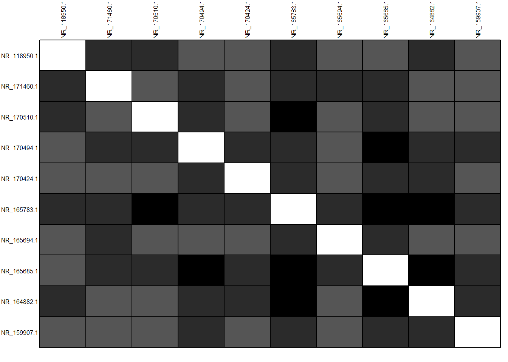
## NULL# kita bisa melihat pola karena data disusun berdasarkan tahun
# namun, kita belum bisa mencapai ke kesimpulanSetelah distance matrix telah terbentuk, proses pembuatan pohon filogenetik dimulai.
tre <- nj(D)
class(tre) #semua tree yang divuat dengan {ape} package akan termasuk class phylo## [1] "phylo"tre <- ladderize(tre)
# pada tahap ini, pohon filogenetik telah terbentuk, setelah ini dilakukan proses plottingTahap memplotting di sini dapat menggunakan 2 cara, yaitu: 1. Base R 2. ggtree package
# Menggunakan base R
plot(tre, cex = 0.6)
title("Bacillus")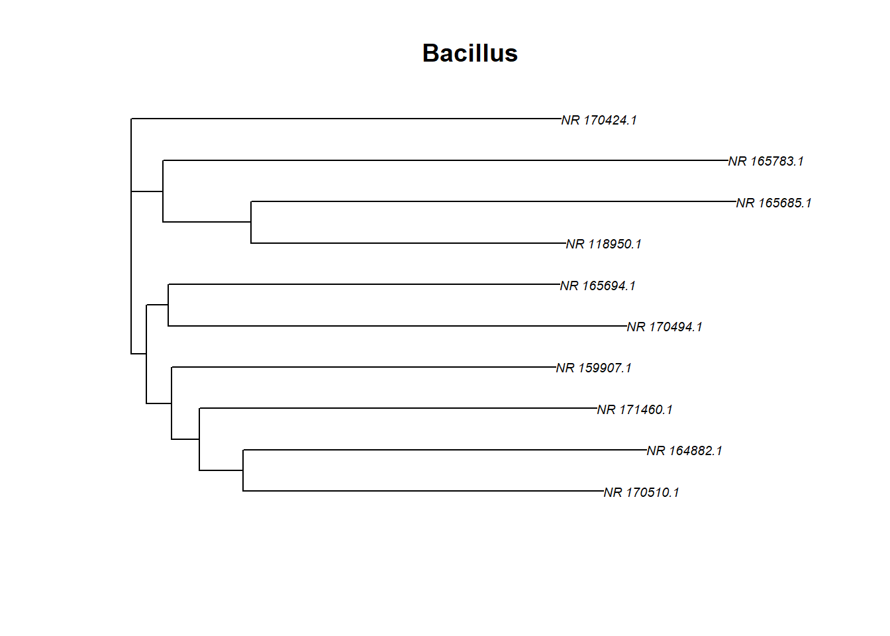
# atau
h_cluster <- hclust(D, method = "average", members = NULL) # method = average is used for UPGMA, members can be equal to NULL or a vector with a length of size D
plot(h_cluster, cex = 0.6)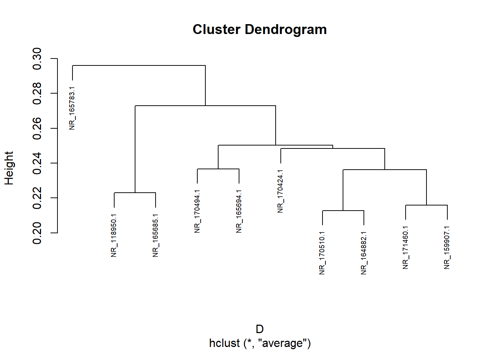
Penggunaan ggtree sangat fleksible. Anda dapat melakukan kustomisasi pohon filogenetik dengan mudah dan cepat.
# alaterntaif pertama
ggtree(tre, yscale = "NA")+
geom_tiplab(hjust = -0.3, size=4, align = TRUE)+
xlim(0,0.5) ## Warning in scaleY(as.phylo(model), res, yscale, layout, ...): yscale is not available...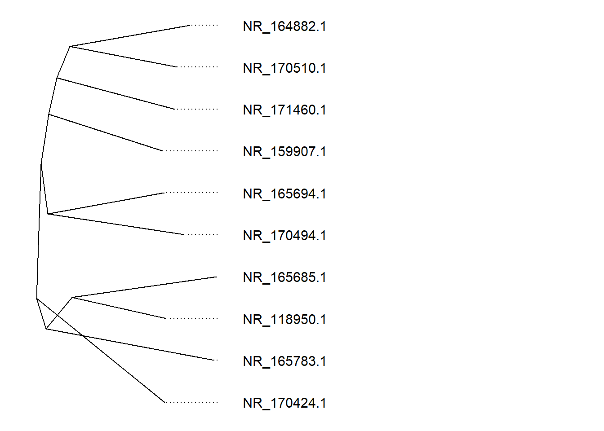
# cara lain
ggtree(tre,layout = "daylight")+
geom_tiplab(hjust = -0.3, size=4, align = TRUE)+
xlim(0,0.5) ## Average angle change [1] 0.119040575095853## Average angle change [2] 0.0180065062992894## Warning: Removed 5 rows containing missing values (geom_segment_g_gtree).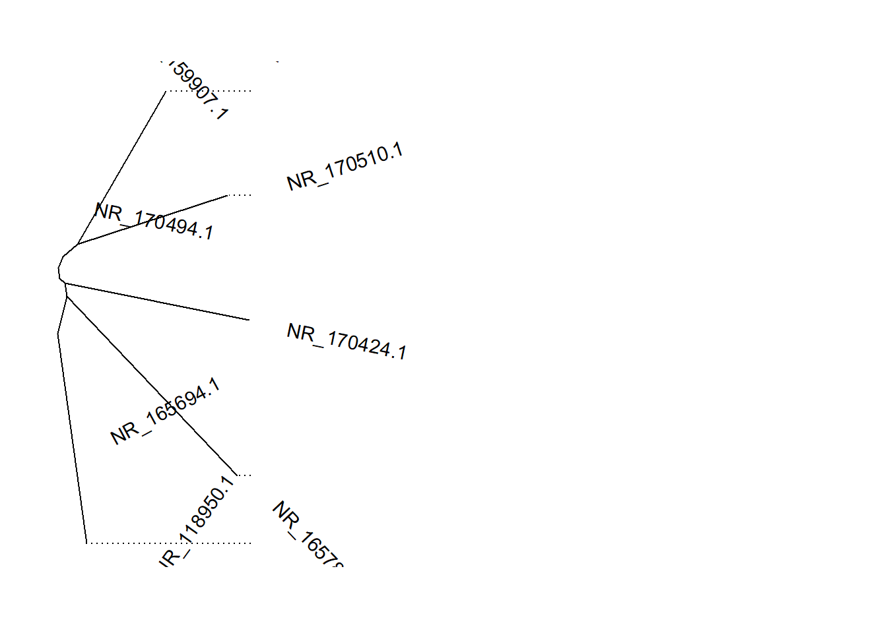
# plot a basic tree
treeplot <- ggtree(tre) +
geom_tiplab(hjust = -0.3, size=4, align = TRUE)+
xlim(0,0.5)
treeplot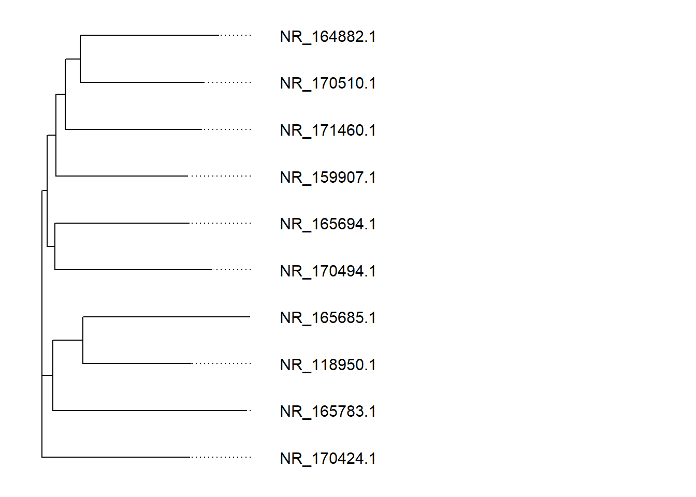
Terdapat beberapa bentuk pohon filogenetik yang dapat anda gunakan yaitu: 1. Rectangular 2. Circular 3. Slanted
ggtree(tre,
layout = "rectangular") # did anything change? this is the default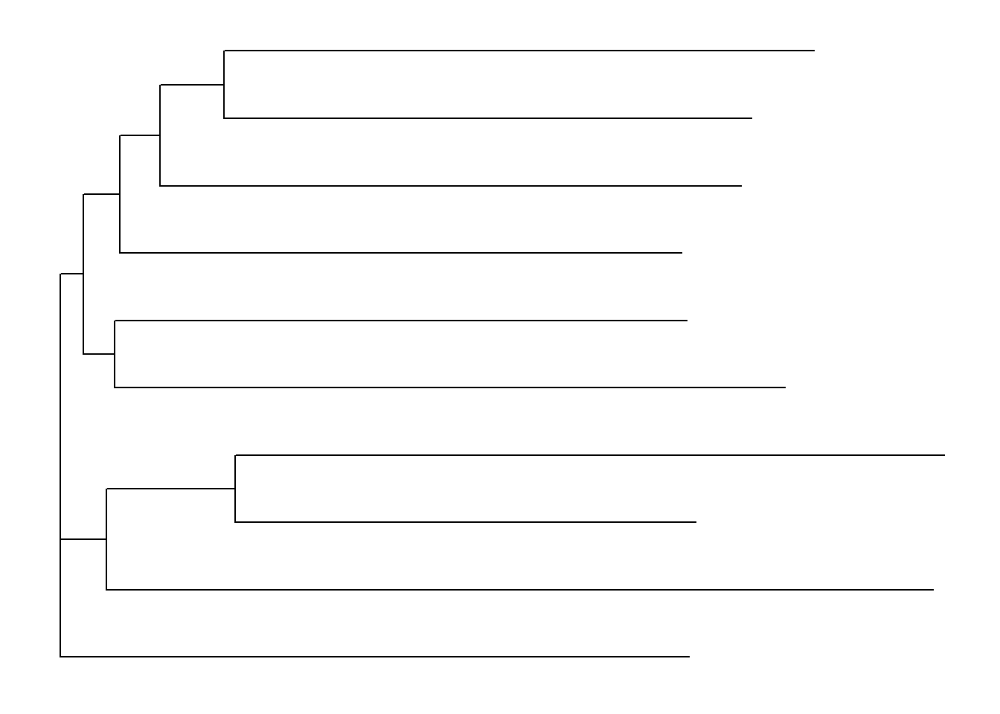
ggtree(tre,
layout = "circular") 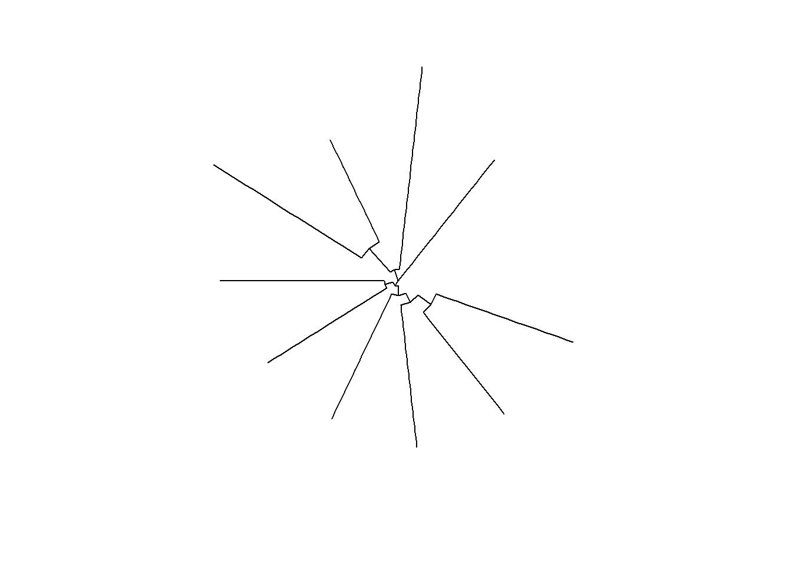
ggtree(tre,
layout = "slanted")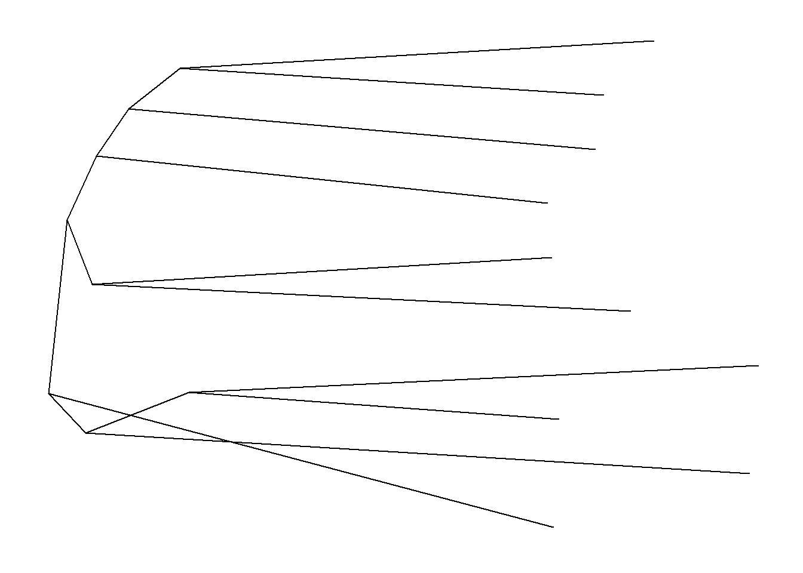
Anda juga dapat membentuk kladogram dengan mengatur panjang branch
# mengatur branch.length = "none" akan membentuk cladogram
ggtree(tre,
layout = "rectangular", branch.length = "none")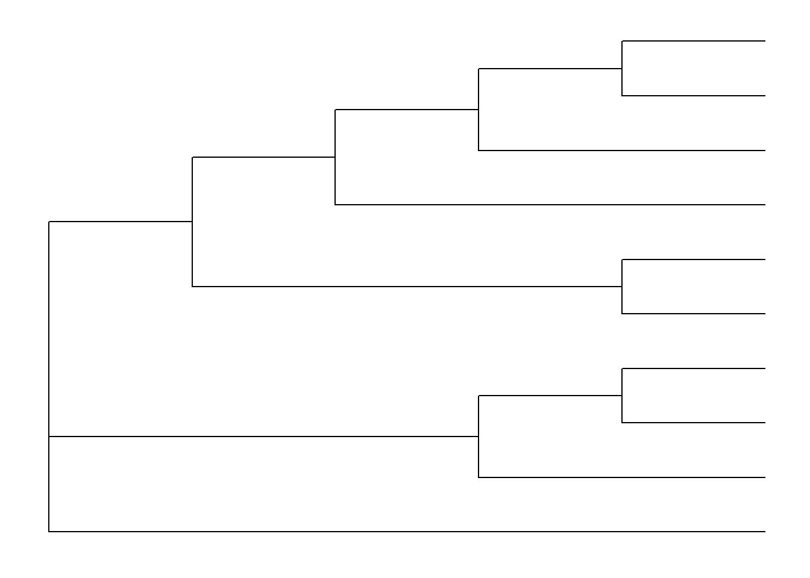
Anda juga dapat berinteraksi dengan plot dengan plotly package
# melihat plot dengan interaktif
ggplotly(treeplot)## Warning in geom2trace.default(dots[[1L]][[1L]], dots[[2L]][[1L]], dots[[3L]][[1L]]): geom_GeomSegmentGGtree() has yet to be implemented in plotly.
## If you'd like to see this geom implemented,
## Please open an issue with your example code at
## https://github.com/ropensci/plotly/issues## Warning in geom2trace.default(dots[[1L]][[1L]], dots[[2L]][[1L]], dots[[3L]][[1L]]): geom_GeomTextGGtree() has yet to be implemented in plotly.
## If you'd like to see this geom implemented,
## Please open an issue with your example code at
## https://github.com/ropensci/plotly/issues2.1.3.3.0.1 Kustomisasi lebih lanjut
# plot using ggtree and highlight clusters
# change the node values for your own data
ggtree(tre) +
geom_tiplab(hjust = -0.3, size=4, align = TRUE) +
geom_hilight(node=5, fill="purple", alpha = 0.2) +
geom_hilight(node=15, fill="dark green", alpha = 0.2) +
geom_hilight(node=12, fill="gold", alpha = 0.2) +
xlim(0,0.5) 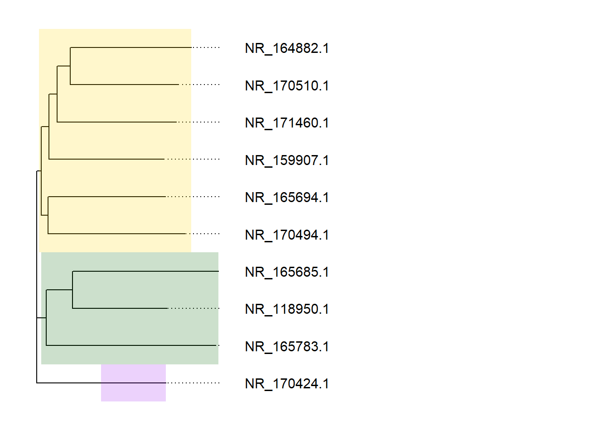 Menambahkan label di pohon filogenetik
#tiplab
ggtree(midpoint.root(tre)) +
geom_treescale(x = 0, y = 0, # x and y position of the treescale
width = 0.01) + # width of scale
geom_tiplab(size = 4) + # displaying tip labels
coord_cartesian(clip = 'off')+ # allows us to draw outside the plot
theme(plot.margin = margin(1,2,1,1, "cm")) # add space around the plot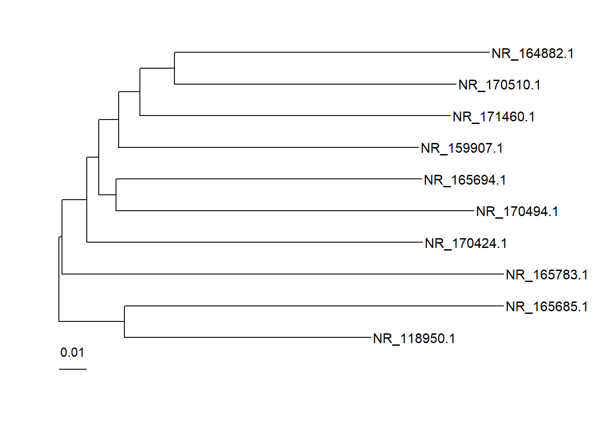
Menambahkan keterangan pada node
# change the node values for your own data
p <- ggtree(tre) +
geom_tiplab( size=3, align = TRUE) +
geom_nodepoint(color = "orange", alpha = 0.5)Melakukan plotting sequence dengan pohon filogenetik
# plot the alignment
dnanih <- as.DNAbin(dna)
finalplot <- msaplot(p, dnanih, offset = 0.08, width = 2)+
scale_fill_viridis_d(alpha = 0.8)## Scale for 'fill' is already present. Adding another scale for 'fill', which
## will replace the existing scale.finalplot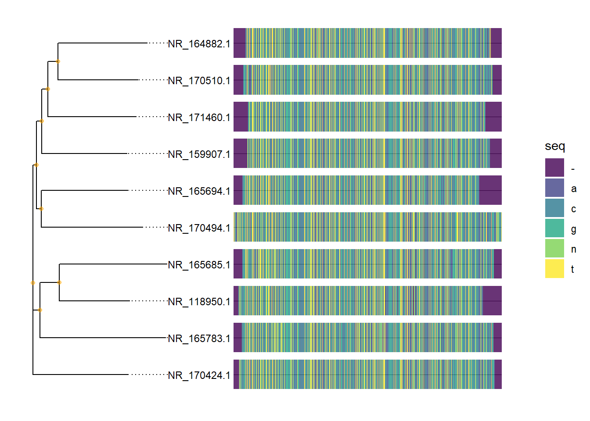
Menyimpan plot
ggsave(
"finalplot.png",
plot = last_plot(),
device = NULL,
path = NULL,
scale = 1,
width = NA,
height = NA,
units = "in",
limitsize = TRUE,
bg = NULL,
)